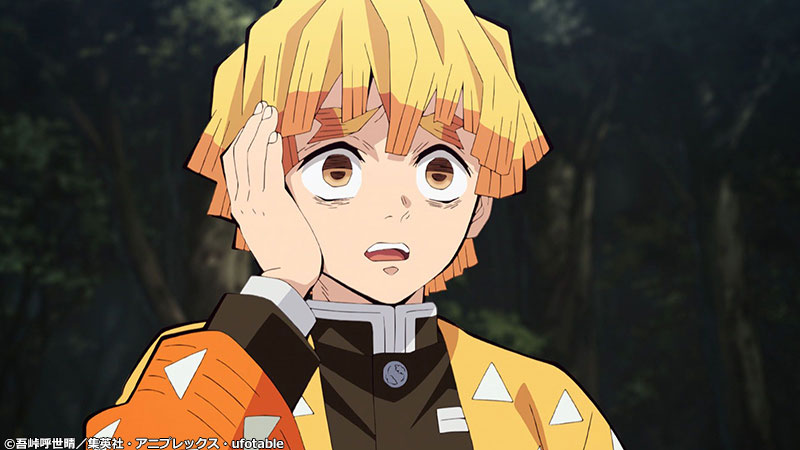

Autor Koyoharu Gotōge
Koyoharu Gotōge é um artista de mangá japonês, conhecido pela série de mangá Demon Slayer: Kimetsu no Yaiba. Em fevereiro de 2021, o mangá tinha mais de 150 milhões de cópias em circulação, tornando-se a nona série de mangá mais vendida de todos os tempos

Studio Ufotable
Ufotable é um estúdio de animação japonesa com respeitável fama pelas suas belíssimas obras bem animadas, contendo uma paleta de cores e cenas de ação que arrepiam qualquer um.
Página Inicial

Onde Assistir?
O filme ficou em cartaz em alguns cinemas do Brasil, atualmente pode ser visto na Crunchyroll